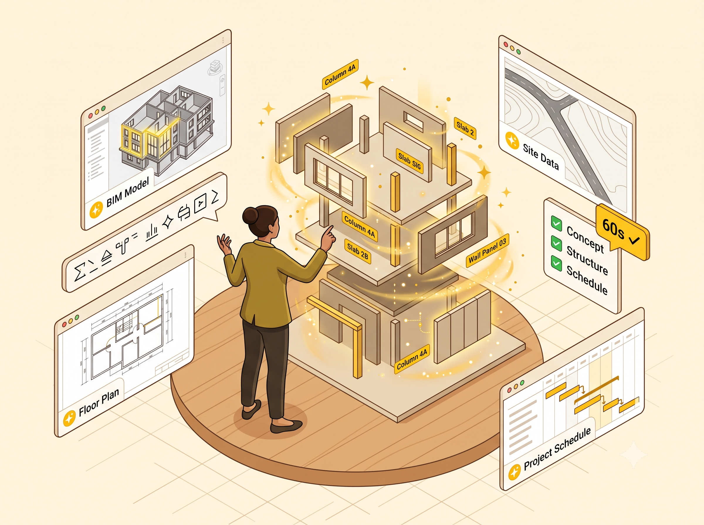

3D BIM Model Viewer
Browser-native. No plugins, no desktop install. Open federated models on any device, straight from a link.
CDE for Malaysian Construction Industry
JKR BINAXONE is the Common Data Environment aligned with JKR BIM standards, ISO 19650, and Malaysian procurement realities, so your documents, models, and approvals move at the speed of the project.

From BPEP through handover and into operations, JKR BINAXONE covers the workflows construction industry teams actually run. Browser-native, open-standards based, and ready on day one.
Browser-native. No plugins, no desktop install. Open federated models on any device, straight from a link.
Controlled issue, transmittals, revisions, and approvals, all structured around ISO 19650 states.
Live BIM Project Execution Plan: roles, LODs, exchange requirements, and milestones tracked in-platform.
One unified workflow across both phases, from design WIP through construction delivery and archive, with digital sign-off captured at every transition.
Granular role-based access mirrored to real project structures: client, PMC, consultant, contractor, sub-contractor.
Every action time-stamped, every sign-off cryptographically bound to the artefact. Export a complete project chain-of-custody when auditors or arbitration call for it.
Design Phase
Architects, engineers, and BIM managers co-author, coordinate, and resolve issues on the same source of truth. Less email, fewer surprises, and clash-free models by the time they reach site.

Multiple architects and engineers edit the same Revit model simultaneously, changes syncing live. And the AI copilot works right alongside them, building, tagging, and filling elements on command while your team reviews and approves.
Automatic clash detection across architectural, structural, and MEP models, with AI that cuts through the noise: grouping related clashes, ranking what to fix first, and drafting the resolution notes. Coordination meetings start at the answer, not the list.
Create, assign, and resolve issues anchored to 3D elements or 2D sheets, synced across Revit, Navisworks, and web/mobile. AI writes the issue description from your markup, suggests the right assignee, and briefs you each morning on what's blocking sign-off.
Workflow
Every document and model moves through enforced ISO 19650 states, with digital sign-off captured at each transition. Auditable end-to-end, exportable on demand.

Construction Phase
JKR BINAXONE follows the project past tender. Site teams, PMC, and contractors work off the same model and documents that design signed off on, with construction-grade workflows layered on top.
Capture daily progress photos and geotagged inspections against the BIM model, then let AI write the site diary: reading the photos, updating percentage-complete, and flagging where the site is drifting from the programme.
Pinpoint defects directly on the model or drawing. AI classifies each defect from its photo, routes it to the right contractor, and drafts the closure report. Nothing slips between handover and DLP.
Field teams always work from the latest JKR SPB site record templates, and AI pre-fills them from data already captured on site, then summarises quality trends across forms so project leads see problems while they're still cheap to fix.
Facility Management Phase
Most as-built models end up in a folder nobody opens. In JKR BINAXONE, handover is where the model starts its second life: a live, BIM-based CMMS run on the same model your team built. No re-keying asset data, no starting from zero.

Every pump, chiller, and switchboard carries its specs, warranty, and O&M data on the model. AI builds the register for you, extracting it from handover documents automatically, and answers questions like "which assets are still under warranty?" in plain language.
Connect IoT, SCADA, and BAS feeds to turn the model into a living digital twin. AI watches live telemetry and years of service history to predict failures, schedule the right maintenance at the right time, and raise work orders before breakdowns, not after.
Track occupancy, condition, and remaining life across the whole estate. AI forecasts renewal budgets and flags where intervention now extends asset life later. Longer life cycles, fewer surprises, lower total cost of ownership.
New · BINAXONE AI Copilot Suite
One AI copilot inside every tool you build with. It builds, tags, and fills your model while you review and approve. And your first JKR compliance check runs free, in 60 seconds.

BIM is now mandatory on RM10M+ projects, and one rejected submission costs you weeks. Run a JKR Compliance Check on a real model and catch it before the counter does.
No new platform to learn. The Revit copilot installs straight into your workflow today, with AutoCAD, Civil 3D, and MS Project copilots on the way. Every plan includes them all as they land, so tiers differ by usage, never by capability.
No credits to buy, no per-action charges. A simple session and weekly allowance you can always see. If you run low, we never hard-stop you mid-project.
Free plan, no card required.
Four reasons teams across the Malaysian construction industry make JKR BINAXONE their CDE of choice.
Hosted on TM One Cloud Alpha in Malaysia. Your project data is stored, processed, and backed up inside Malaysian jurisdiction, and never leaves the country.
IFC-native with full support for open BIM formats. Your models remain portable, interoperable, and fully yours, today and well into the future.
Post-quantum cryptography for document signing and BIM file integrity, aligned with Malaysian national cybersecurity direction. Long-lived infrastructure projects deserve long-lived cryptography.
Aligned with JKR BIM standards, ISO 19650, and the procurement realities government agencies and contractors actually face. Localised, not translated.
Every engagement quoted to your scope, across the full project lifecycle. License modules individually or as a complete bundle.
Platform · JKR BINAXONE Modules
Design Phase
Common Data Environment, where every discipline designs on one source of truth.
Construction Phase
Integrated Construction Management System, the design record carried onto site.
Facility Management Phase
BIM-based maintenance management, the as-built model alive and working after handover.
License modules individually or as a full-lifecycle bundle. Flexible models available, annual subscription or pay-per-project, tailored to government procurement and private-sector contract structures. All modules include SSO, custom RBAC, Malaysian hosting, and dedicated onboarding.
AI Copilot Suite · Self-serve
Billed in USD · annual billing saves ~17%
Try it on a real project
No card required
Your daily AEC copilot
Less than one billable hour
Built for heavy days
For sustained all-day use
For firms & offices
Standardise your whole practice
You already invest thousands a year in your software seat. This is the upgrade that makes it work 10× harder, and it pays for itself in billable hours on a single project. Install free at plugins.jkrbinaxone.com
We'll get back to you within 1 business day.